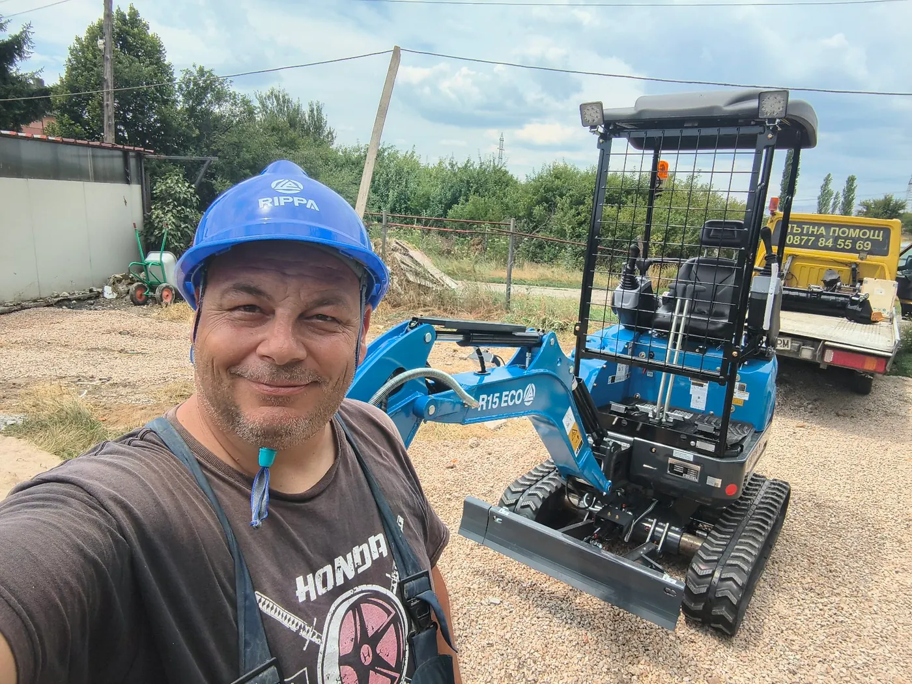

Минибагер в Петърч — локална услуга за община Костинброд
Минибагер в с. Петърч: изкопи за огради, дренаж, свредел, чук и палец. База Костинброд — бърза реакция. Доставка на техниката включена при цял ден.

Петърч е най-голямото село в община Костинброд (~2200 жители) и естествено продължение на нашата локална работа. Не идваме „от София“ — базата е в същата община.
Достъп и условия
Смесени дворове, стопански постройки и нови огради. Компактният Rippa минава през тесни входове; палецът помага при разчистване на корени и стари материали преди нов изкоп.
Услуги в Петърч
- Огради: ивица + свредел 150 мм
- ВиК и дренажни канали
- Подравняване и засипване
- Леко къртене с хидравличен чук
Доставка
Доставката на багера до Петърч е включена при цял ден. Полуден: минимум 100–120 €. Без извозване на земя — само работа на машината и доставка до обекта.
Услуги в Петърч
- Изкопи за канали и шахти
- Изкопи за огради и дупки за колове
- Дренаж и ВиК
- Подравняване на терен
- Свредел 150 мм
- Хидравличен чук
- Хидравличен палец
Цени за Петърч
Изкоп / планиране: 200–230 € / смяна. С чук: 250–270 €. Минимум половин ден: 100–120 €.
Доставка на минибагера: включена при цял ден (Петърч е в община Костинброд, близък радиус). Пълна таблица: Цени.